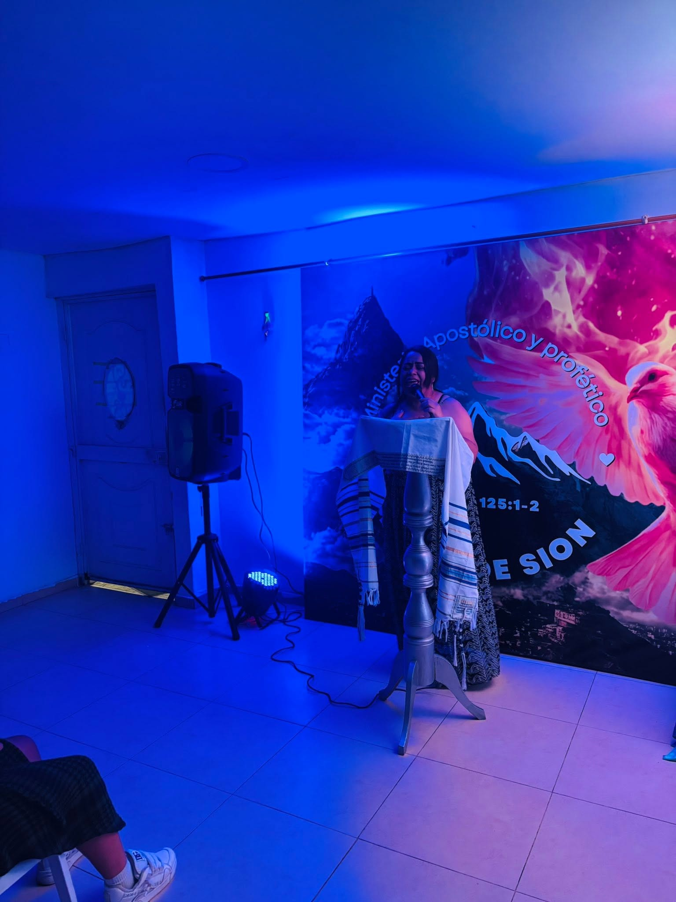
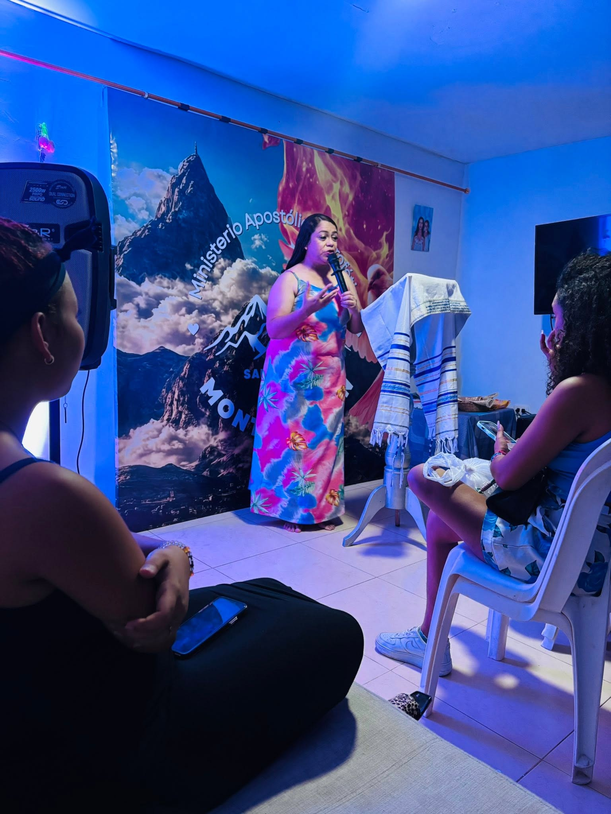
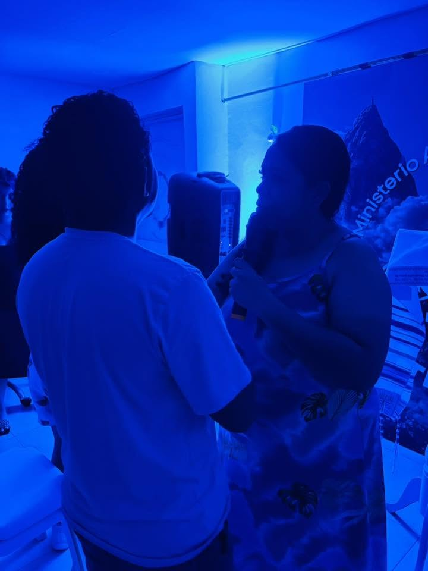
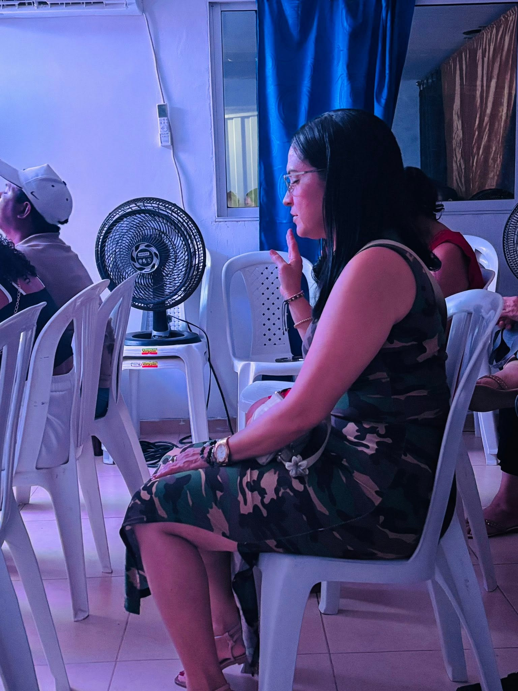
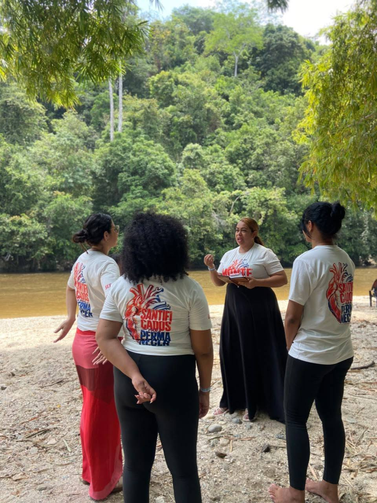
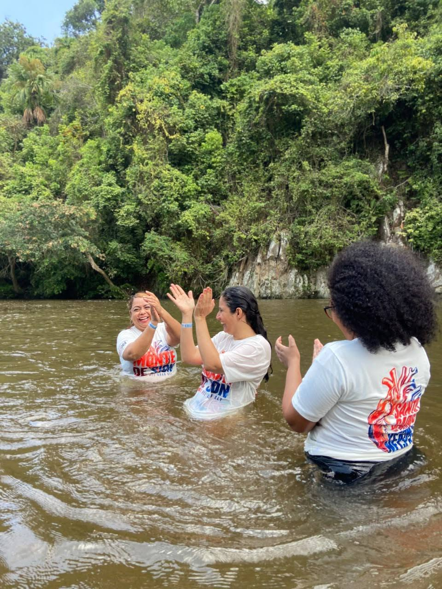
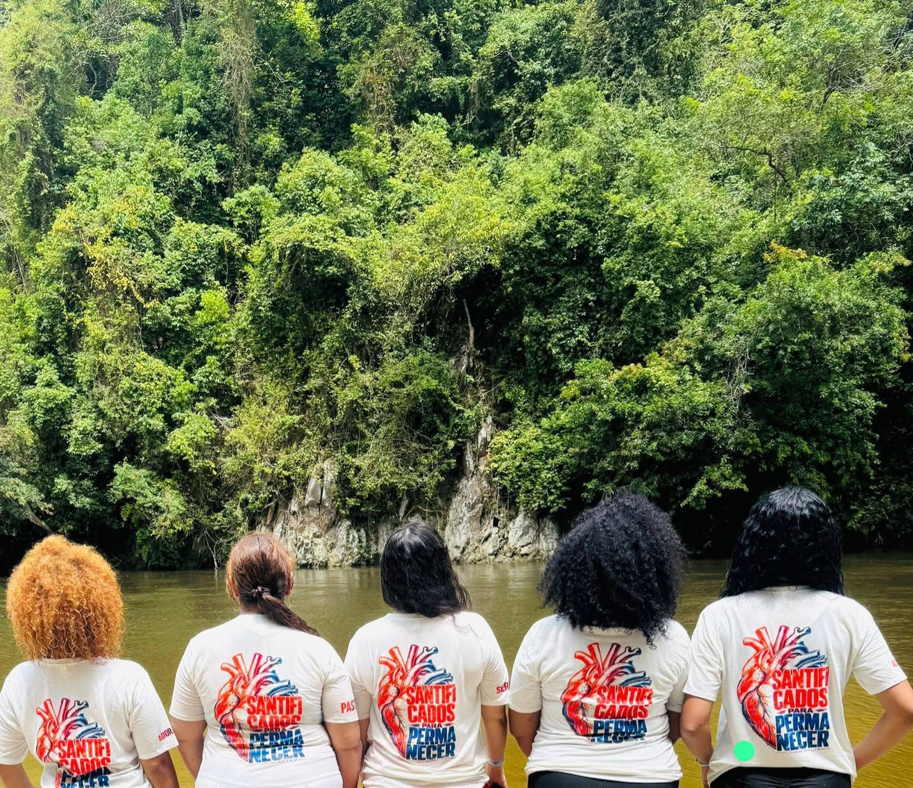

Fe
Creemos en el poder de la Palabra y en un Dios que transforma vidas.
Ministerio Apostólico y Profético
Los que confían en Jehová son como el monte de Sion, que no se mueve, sino que permanece para siempre.
Salmo 125:1
Quiénes somos
Somos una familia de fe en Santa Marta que se reúne para adorar a Dios con todo el corazón. Bajo el liderazgo de la pastora Yury Montero, creemos que la iglesia no es un edificio: somos personas —niños, jóvenes y adultos— caminando juntas.
Nuestra misión es anunciar el evangelio, formar discípulos y servir a nuestra comunidad con amor. Aquí nadie es visitante por mucho tiempo: todos son familia.
Creemos en el poder de la Palabra y en un Dios que transforma vidas.
Niños, jóvenes y adultos adoramos juntos, sin distinciones: una sola familia.
Servimos a Dios y a nuestra comunidad con amor y entrega.
7:00 p. m.
Culto de adoración
7:00 p. m.
Servicio dominical
Te esperamos con los brazos abiertos
Palabra
Los que confían en Jehová son como el monte de Sion, que no se mueve, sino que permanece para siempre. Como Jerusalén tiene montes alrededor de ella, así Jehová está alrededor de su pueblo desde ahora y para siempre.
Salmo 125:1-2 (RVR1960)







Diagonal 29 #32-65, Santa Lucía
Jueves 7:00 p. m. · Domingo 7:00 p. m.
+57 310 652 6950 Síguenos en Facebook